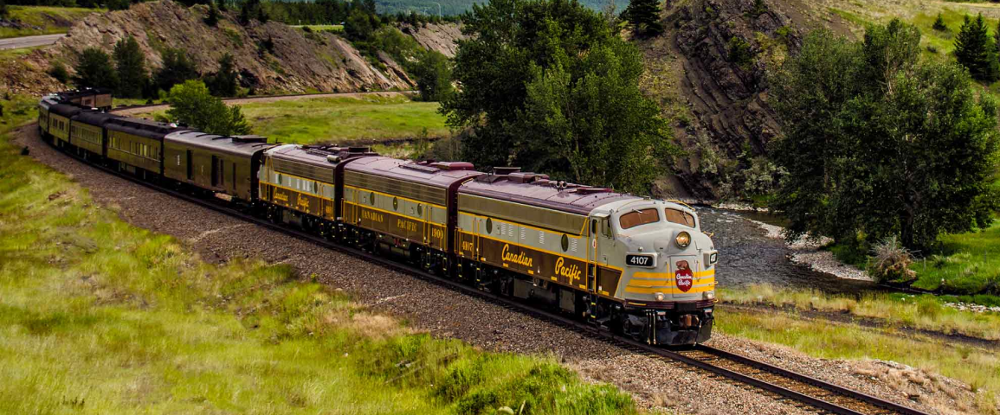

História do Parque Nacional de Banff
O Parque Nacional de Banff foi criado em 1885, sendo o primeiro parque nacional do Canadá e o terceiro do mundo. Tudo começou com a descoberta de fontes termais nas Montanhas Rochosas por três operários da ferrovia Canadian Pacific. A notícia se espalhou rapidamente, e logo o local se transformou em uma atração turística de destaque.
Banff desempenhou um papel essencial no desenvolvimento do turismo no Canadá. A construção do luxuoso Banff Springs Hotel em 1888, à beira do Rio Bow, ajudou a consolidar o parque como destino para viajantes do mundo todo em busca de aventura, descanso e contato com a natureza.
A antiga estação de trem de Banff foi porta de entrada para muitos dos primeiros visitantes do parque. Hoje, ela é um marco histórico que lembra os primórdios do turismo na região.
As fontes termais de Cave and Basin são o local onde tudo começou. Atualmente, é um centro interpretativo que conta a história da criação do parque e a importância das águas termais para a cultura indígena e o turismo.
Ao longo das décadas, Banff foi crescendo em estrutura e proteção ambiental. Hoje, o parque cobre mais de 6.600 km² de área protegida e é reconhecido como Patrimônio Mundial pela UNESCO. Um lugar onde a história natural e humana se encontram em perfeita harmonia.